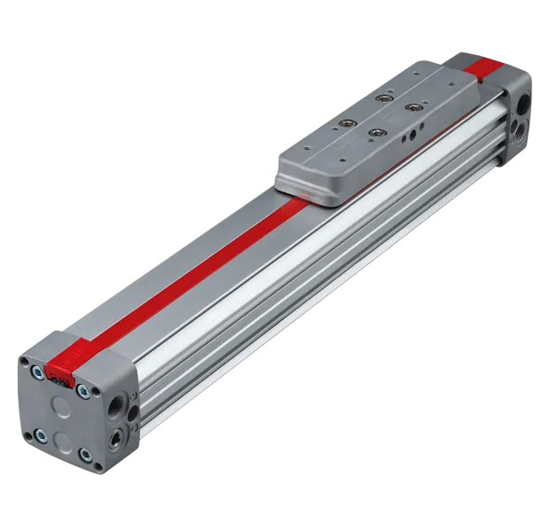
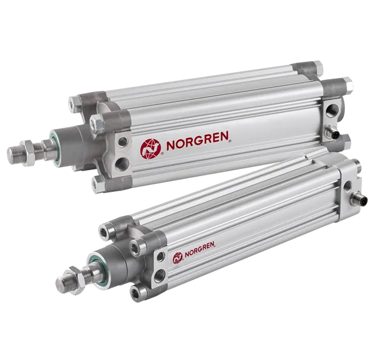
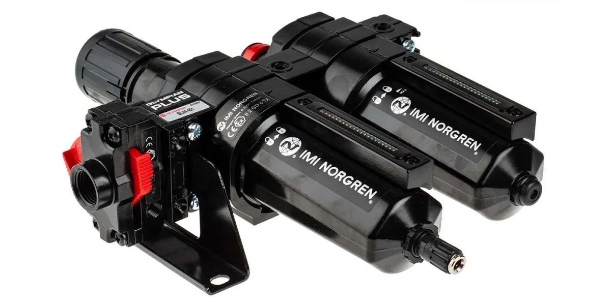
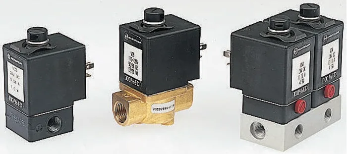

Xuất xứ: Anh Quốc
Norgren (thuộc IMI) là thương hiệu toàn cầu về thiết bị khí nén và điều khiển chuyển động, cung cấp van, xy-lanh, bộ lọc – điều áp và phụ kiện khí nén chính xác cho tự động hóa nhà máy và dây chuyền sản xuất.
Fast Group là đại lý bán hàng chính hãng Norgren tại Việt Nam — nhập khẩu trực tiếp hàng chính hãng, tư vấn lựa chọn cấu hình, kiểm tra và đối chiếu part number, cung ứng cho dự án mới lẫn nhu cầu bảo trì, thay thế thiết bị.
Danh mục khí nén Norgren rất rộng — riêng ba nhóm chính (FRL, phụ kiện & ống, xy-lanh) đã có hơn 12.000 part number khác nhau. Việc xác định đúng mã theo cỡ cổng, dải áp suất, loại xả nước và tuỳ chọn đồng hồ là bước quyết định để tránh đặt nhầm hàng.
Fast Group vận hành cơ sở dữ liệu sản phẩm Norgren riêng tại công cụ tra cứu part number Norgren trên norgren.com.vn — nhập mã hoặc lọc theo thông số để xác nhận cấu hình trước khi gửi RFQ.
Tài liệu kỹ thuật, catalogue và bài viết chuyên đề về hệ khí nén công nghiệp được tổng hợp tại thư viện tài liệu Norgren.
Norgren được Carl Norgren — một người Thụy Điển nhập cư Hoa Kỳ — sáng lập năm 1927, khởi đầu ngay tại căn bếp gia đình ở Denver, Colorado. Ông là người phát minh bộ lọc khí nén thực dụng đầu tiên và bộ tra dầu inline đầu tiên trên thế giới, đặt nền móng cho ngành thiết bị khí nén hiện đại.
Năm 1972, gia đình Norgren chuyển nhượng công ty cho tập đoàn IMI plc (Anh Quốc), hình thành mảng fluid power của IMI. Ngày nay Norgren có 22 nhà máy trên toàn cầu cùng mạng lưới bán hàng và dịch vụ tại 75 quốc gia, chuyên van, xy-lanh, bộ lọc - điều áp - tra dầu (FRL) và phụ kiện khí nén chất lượng cao.




FRL là cụm xử lý khí nén đặt ngay sau đường khí chính, quyết định tuổi thọ của toàn bộ van và xy-lanh phía sau. Norgren cung cấp hai họ chính: Excelon Plus (tháo lắp nhanh, bảo trì không rã ống) và Olympian Plus (kết cấu module ghép nối linh hoạt).
Chọn đúng cụm FRL ngay từ đầu quyết định tuổi thọ của van và xy-lanh phía sau — lọc thiếu cấp hoặc xả nước sai kiểu là nguyên nhân hỏng hóc phổ biến nhất trong hệ khí nén nhà máy.
| Phân nhóm | Dòng tiêu biểu | Thông số điển hình | Số mã |
|---|---|---|---|
| Bộ lọc điều áp (filter regulator) | B84G, B82G (Excelon Plus) · B64G, B68G (Olympian Plus) · B07 | G1/4 – G1/2 · lọc 40 µm · 0,3 – 10 bar | 1.907 |
| Bộ lọc khí nén | F-series Excelon / Olympian | Lọc thô 40 µm đến lọc tinh và tách dầu | 619 |
| Van điều áp | R07 và các dòng regulator tiêu chuẩn | Điều áp có/không đồng hồ, relieving & non-relieving | 478 |
| Cụm FRL hoàn chỉnh | Combination unit 2 hoặc 3 mảnh | Lắp sẵn theo cụm, tiết kiệm thời gian thi công | 241 |
| Bộ tra dầu (lubricator) | L-series | Tra dầu sương cho actuator và dụng cụ khí nén | 242 |
| Van điều khiển FRL | Van chặn, van xả nhanh, van khởi động mềm | Lock-out valve phục vụ quy trình LOTO | 212 |
| Phụ kiện & phụ tùng FRL | Cốc, gioăng, đồng hồ, ngàm kẹp | Vật tư bảo trì định kỳ | 310 |
Tổng cộng hơn 4.000 part number thuộc nhóm FRL — xem chi tiết từng phân nhóm tại nhóm xử lý khí nén FRL trên norgren.com.vn.
Các cỡ lòng thông dụng tại Việt Nam là Ø25, Ø32, Ø40, Ø50 và Ø80 mm. Xy-lanh theo chuẩn ISO 15552 (profile/tie-rod) và ISO 6432 (roundline) có kích thước lắp đặt thống nhất giữa các hãng — thay thế được cho thiết bị cũ mà không phải sửa cơ khí.
Khi thay thế xy-lanh trên máy đã lắp đặt, ba thông số cần đối chiếu là cỡ lòng, hành trình và kiểu gá lắp — riêng tuỳ chọn giảm chấn và cảm biến từ thường bị bỏ sót khi đặt hàng.
| Phân nhóm | Dòng tiêu biểu | Đặc điểm & ứng dụng | Số mã |
|---|---|---|---|
| Xy-lanh compact | RA (ISO compact, ren trong) · RM | Hành trình ngắn, không gian lắp hạn chế | 1.482 |
| Xy-lanh tròn (roundline) | RT | Thân tròn, ISO 6432 — thiết bị nhẹ, máy đóng gói | 1.302 |
| Xy-lanh profile / tie-rod | PRA | ISO 15552, tải trung bình đến nặng, dễ thay thế chéo | 971 |
| Xy-lanh inox | KM | Thân thép không gỉ — thực phẩm, dược, môi trường rửa | 376 |
| Xy-lanh không trục (rodless) | Rodless series | Hành trình dài trên chiều dài lắp đặt ngắn | 220 |
Xem toàn bộ cấu hình hành trình, cỡ lòng và tuỳ chọn giảm chấn tại nhóm xy-lanh & actuator Norgren. Nhóm khớp nối, ống và phụ kiện lắp đặt xem tại nhóm khớp nối và ống khí nén (gần 3.900 mã).
Ký hiệu G1/4, G1/2 trong mã FRL là ren cổng kết nối, không phải đường kính ống khí. Đặt theo cỡ ống dẫn đến sai ren và phải mua thêm bộ chuyển đổi, làm tăng tổn thất áp suất trên cụm.
Cùng một dòng bộ lọc có bản xả tay (manual drain) và bản xả tự động (automatic drain), mã khác nhau ở ký tự cuối. Ở khí hậu Việt Nam độ ẩm cao, chọn bản xả tay cho cụm đặt xa vị trí vận hành gần như chắc chắn dẫn đến nước tích tụ và hỏng van phía sau.
Bộ lọc điều áp có bản kèm đồng hồ và bản không, chênh lệch giá đáng kể. Khi báo giá theo mã cũ lấy từ nhãn thiết bị, cần xác nhận lại tuỳ chọn này trước khi chốt đơn.
Hai xy-lanh cùng ISO 15552, cùng cỡ lòng và hành trình vẫn khác nhau ở giảm chấn (không giảm chấn / giảm chấn đàn hồi / giảm chấn khí điều chỉnh được) và ở tuỳ chọn cảm biến từ. Lắp sai gây va đập cuối hành trình và giảm tuổi thọ gioăng.
Fast Group là đại lý bán hàng, nhập khẩu hàng chính hãng Norgren qua kênh cung ứng chính thức của IMI. Mọi lô hàng đi kèm bộ chứng từ đầy đủ phục vụ nghiệm thu và thanh toán:
Các mã FRL và xy-lanh thông dụng thường có sẵn tại kho khu vực, thời gian giao khoảng 2–4 tuần. Cấu hình đặc biệt hoặc mã ít phổ biến phụ thuộc lịch sản xuất tại nhà máy, thường 6–10 tuần.
Với gói thầu có danh mục dài, Fast Group nhận file BOQ/BOM, rà soát toàn bộ mã, đánh dấu các mã đã ngừng sản xuất và đề xuất mã thay thế trước khi báo giá. Xem thêm dịch vụ cung cấp & phân phối vật tư.
Fast Group là đại lý bán hàng, nhập khẩu hàng Norgren chính hãng qua kênh cung ứng chính thức của tập đoàn IMI và cung cấp đầy đủ chứng từ CO/CQ cho từng lô hàng.
Excelon Plus cho phép tháo từng mảnh trong cụm FRL để bảo trì mà không cần rã đường ống, phù hợp cụm cần vệ sinh, thay lõi lọc thường xuyên. Olympian Plus có kết cấu module ghép nối linh hoạt, thuận tiện khi cần mở rộng hoặc thay đổi cấu hình cụm về sau.
Phần lớn các dòng Norgren có vòng đời rất dài và vẫn còn phụ tùng thay thế. Nếu mã đã ngừng sản xuất, hãng thường công bố mã kế nhiệm tương đương. Gửi mã cũ hoặc ảnh nhãn để Fast Group đối chiếu, hoặc tự rà trước trong danh mục sản phẩm Norgren phân theo nhóm chức năng.
Được, nếu cả hai cùng tuân thủ chuẩn ISO 15552 (profile/tie-rod) hoặc ISO 6432 (roundline) — kích thước lắp đặt, vị trí lỗ bắt và cỡ ren cổng đã được chuẩn hoá. Cần đối chiếu thêm hành trình, tuỳ chọn giảm chấn và loại cảm biến từ nếu thiết bị có dùng.
Mã thông dụng khoảng 2–4 tuần. Cấu hình đặc biệt hoặc mã ít phổ biến thường 6–10 tuần, phụ thuộc lịch sản xuất của nhà máy IMI.
Có. Gửi file BOQ/BOM, Fast Group rà soát toàn bộ mã, đánh dấu mã đã ngừng sản xuất, đề xuất phương án thay thế và báo giá theo từng dòng. Tham khảo thêm các bài viết kỹ thuật về hệ khí nén công nghiệp.
Gửi part number hoặc mô tả nhu cầu — Fast Group hỗ trợ kiểm tra mã, báo giá, nhập khẩu, chứng từ và xử lý đơn hàng nhanh.